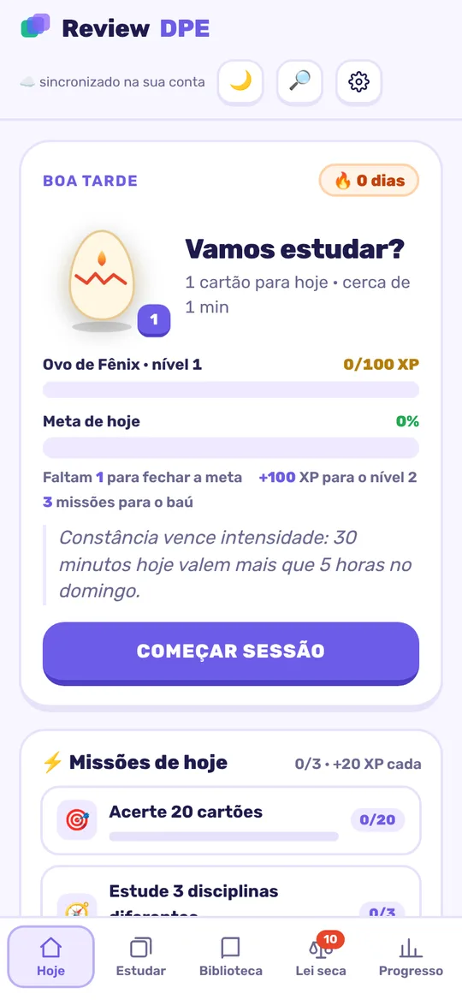
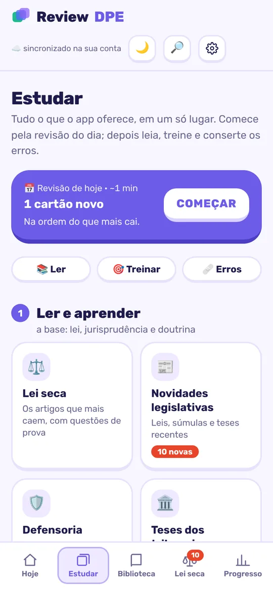
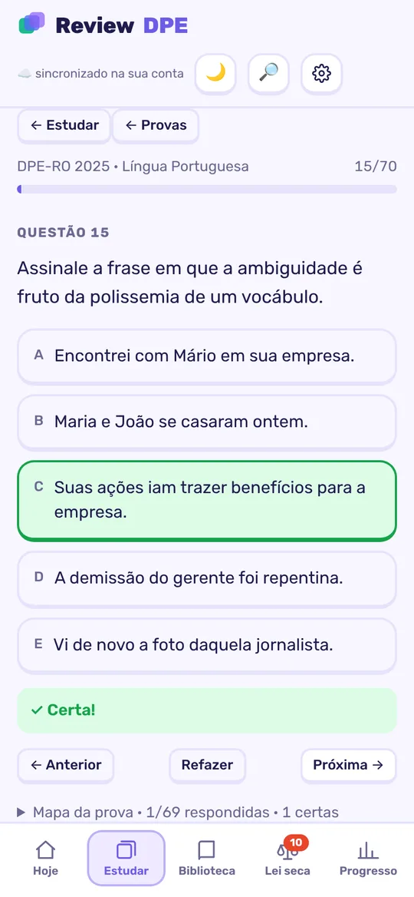
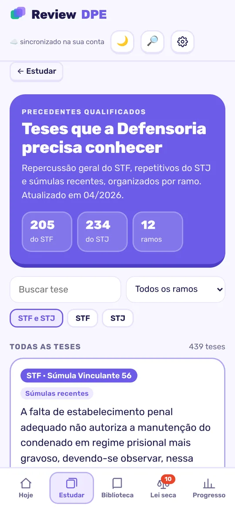
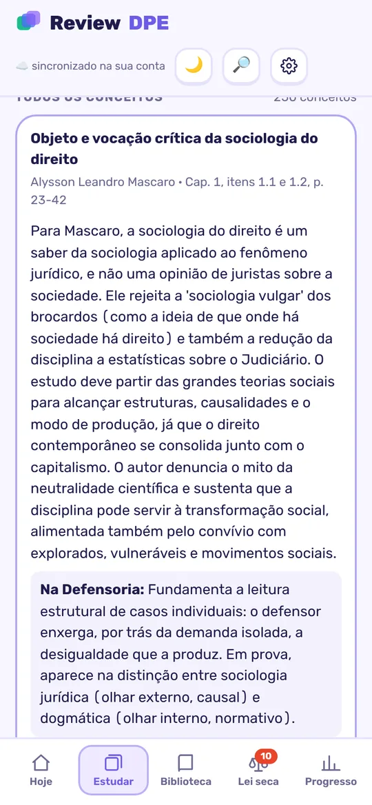

📅
Revisão do dia
Cartões que voltam no momento certo, na ordem do que mais cai. Você só segue o fluxo.
FSRS · repetição espaçadaO Review DPE mostra exatamente o que você vai esquecer amanhã, e o que mais cai na prova da Defensoria. Estude 20 minutos por dia e chegue na prova lembrando de verdade.
Funciona no celular e no computador · instala como app · estuda até sem internet

O problema
Não é falta de esforço: é a curva do esquecimento. Sem revisão, a gente perde boa parte do que leu em poucos dias. Reler o PDF inteiro não resolve.
O que tem dentro
Nada de 15 PDFs abertos. Você abre o app, ele te diz o que estudar hoje.
Cartões que voltam no momento certo, na ordem do que mais cai. Você só segue o fluxo.
FSRS · repetição espaçadaOs artigos mais cobrados, com as questões de prova de Defensoria embaixo de cada um.
teste imediato439 teses de repercussão geral e repetitivos, por ramo, com busca e alerta do que foi superado.
STF e STJOs conceitos que caem, extraídos dos manuais mais usados, em resumo próprio e com a referência.
+10 obrasResolva provas reais de DPE com correção na hora, placar por matéria e as erradas indo para a revisão.
370 questõesSúmulas e teses institucionais que importam à DPE, provas anteriores e provas comentadas.
feito para DPELeis, súmulas e teses novas explicadas: o que mudou e como cai. Nada passa batido.
atualizadoRevise de olhos livres: no ônibus, na academia, lavando louça. O app lê para você.
áudioEscreva a tese com cronômetro e compare com o espelho. Discursiva também se treina.
discursivaModos para os cartões que você mais erra, para os pares que confunde e revisão antes de dormir.
sanguessugas · paresSequência de dias, metas, missões e a Fênix que evolui com você. Dá vontade de voltar amanhã.
gamificadoInstale no celular como app. Estude sem internet e seu progresso sincroniza quando conectar.
celular e computadorPor dentro




Como funciona
Pagamento seguro pela Asaas (Pix, boleto ou cartão).
Use o mesmo e-mail da compra. O acesso é liberado assim que o pagamento é confirmado.
Escolha a Defensoria do seu concurso, adicione o app à tela inicial e comece a revisão do dia.
Assinatura
Dúvidas
Sim. Você escolhe a DPE do seu concurso (qualquer estado) ou a DPU. A base de lei seca, teses e doutrina vale para todas, e as provas de Defensoria ajudam a entender o estilo das bancas.
Não. O Review DPE abre no navegador e pode ser instalado na tela inicial do celular ou do computador, como um app. Funciona em Android, iPhone e computador.
Sim. Depois de entrar na conta, você estuda offline. A cada 7 dias o app confirma sua assinatura quando houver conexão.
Não substitui. O Review DPE é a ferramenta para você não esquecer o que estudou e treinar o que mais cai. Ele funciona muito bem junto com seu curso ou material.
Pode, quando quiser e sem multa. E se desistir em até 7 dias da compra, devolvemos o valor integral.
Fica no seu aparelho e na sua conta: trocou de celular, entra e continua de onde parou.